Web Server Statistics for msoeslmt.com
Web Server Statistics for msoeslmt.com
Program started on Sat, Feb 28 2015 at 12:06 PM.
Analyzed requests from Tue, May 13 2014 at 5:56 PM to Sat, Feb 28 2015 at 10:06 AM (290.67 days).
Web Server Statistics for msoeslmt.comProgram started on Sat, Feb 28 2015 at 12:06 PM.
Analyzed requests from Tue, May 13 2014 at 5:56 PM to Sat, Feb 28 2015 at 10:06 AM (290.67 days).
(Go To: Top | General Summary | Monthly Report | Daily Summary | Hourly Summary | Domain Report | Organization Report | Redirected Referrer Report | Failed Referrer Report | Referring Site Report | Browser Report | Browser Summary | Operating System Report | Status Code Report | File Size Report | File Type Report | Directory Report | Request Report)
Figures in parentheses refer to the 7-day period ending Feb 28 2015 at 12:06 PM.
Successful requests: 6,259 (514)
Average successful requests per day: 21 (73)
Successful requests for pages: 1,774 (133)
Average successful requests for pages per day: 6 (18)
Failed requests: 1,234 (4)
Redirected requests: 10 (0)
Distinct files requested: 182 (35)
Distinct hosts served: 705 (12)
Data transferred: 194.31 megabytes (18.00 megabytes)
Average data transferred per day: 684.52 kilobytes (2.57 megabytes)
(Go To: Top | General Summary | Monthly Report | Daily Summary | Hourly Summary | Domain Report | Organization Report | Redirected Referrer Report | Failed Referrer Report | Referring Site Report | Browser Report | Browser Summary | Operating System Report | Status Code Report | File Size Report | File Type Report | Directory Report | Request Report)
Each unit ( ) represents 15 requests for pages or part thereof.
) represents 15 requests for pages or part thereof.
| month | #reqs | #pages | |
|---|---|---|---|
| May 2014 | 115 | 115 |  |
| Jun 2014 | 68 | 68 |  |
| Jul 2014 | 111 | 111 | |
| Aug 2014 | 114 | 114 | |
| Sep 2014 | 218 | 132 | |
| Oct 2014 | 1765 | 202 |  |
| Nov 2014 | 485 | 129 | |
| Dec 2014 | 522 | 139 | |
| Jan 2015 | 1006 | 415 |  |
| Feb 2015 | 1855 | 349 | |
Busiest month: Jan 2015 (415 requests for pages).
(Go To: Top | General Summary | Monthly Report | Daily Summary | Hourly Summary | Domain Report | Organization Report | Redirected Referrer Report | Failed Referrer Report | Referring Site Report | Browser Report | Browser Summary | Operating System Report | Status Code Report | File Size Report | File Type Report | Directory Report | Request Report)
Each unit () represents 8 requests for pages or part thereof.
| day | #reqs | #pages | |
|---|---|---|---|
| Sun | 1597 | 239 | |
| Mon | 905 | 246 | |
| Tue | 826 | 262 |  |
| Wed | 723 | 291 | |
| Thu | 721 | 261 | |
| Fri | 734 | 225 | |
| Sat | 753 | 250 | |
(Go To: Top | General Summary | Monthly Report | Daily Summary | Hourly Summary | Domain Report | Organization Report | Redirected Referrer Report | Failed Referrer Report | Referring Site Report | Browser Report | Browser Summary | Operating System Report | Status Code Report | File Size Report | File Type Report | Directory Report | Request Report)
Each unit () represents 3 requests for pages or part thereof.
| hour | #reqs | #pages | |
|---|---|---|---|
| 0 | 154 | 69 | |
| 1 | 197 | 71 | |
| 2 | 253 | 61 | |
| 3 | 295 | 80 | |
| 4 | 157 | 66 | |
| 5 | 195 | 84 | |
| 6 | 136 | 63 | |
| 7 | 263 | 91 | |
| 8 | 158 | 70 | |
| 9 | 152 | 82 | |
| 10 | 104 | 46 | |
| 11 | 203 | 98 | |
| 12 | 238 | 76 | |
| 13 | 464 | 88 | |
| 14 | 126 | 56 | |
| 15 | 257 | 92 | |
| 16 | 266 | 61 | |
| 17 | 389 | 76 | |
| 18 | 178 | 63 | |
| 19 | 341 | 86 | |
| 20 | 273 | 59 | |
| 21 | 612 | 89 | |
| 22 | 620 | 76 | |
| 23 | 228 | 71 | |
(Go To: Top | General Summary | Monthly Report | Daily Summary | Hourly Summary | Domain Report | Organization Report | Redirected Referrer Report | Failed Referrer Report | Referring Site Report | Browser Report | Browser Summary | Operating System Report | Status Code Report | File Size Report | File Type Report | Directory Report | Request Report)
Listing domains, sorted by the amount of traffic.
| #reqs | %bytes | domain |
|---|---|---|
| 6259 | 100% | [unresolved numerical addresses] |
(Go To: Top | General Summary | Monthly Report | Daily Summary | Hourly Summary | Domain Report | Organization Report | Redirected Referrer Report | Failed Referrer Report | Referring Site Report | Browser Report | Browser Summary | Operating System Report | Status Code Report | File Size Report | File Type Report | Directory Report | Request Report)
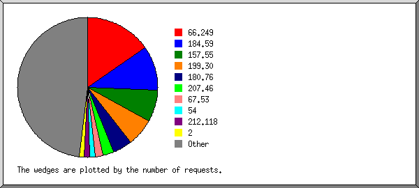
Listing the top 20 organizations by the number of requests, sorted by the number of requests.
| #reqs | %bytes | organization |
|---|---|---|
| 1282 | 11.61% | 66.249 |
| 1013 | 20.00% | 184.59 |
| 566 | 4.61% | 157.55 |
| 507 | 12.45% | 199.30 |
| 246 | 1.42% | 180.76 |
| 203 | 1.44% | 207.46 |
| 175 | 3.57% | 67.53 |
| 121 | 3.13% | 212.118 |
| 94 | 2.31% | 54 |
| 72 | 1.34% | 65.26 |
| 71 | 2.53% | 147.202 |
| 68 | 1.76% | 78 |
| 68 | 1.76% | 186.207 |
| 66 | 0.48% | 38 |
| 65 | 0.17% | 192.99 |
| 47 | 0.90% | 94 |
| 46 | 0.90% | 174.102 |
| 45 | 0.89% | 70 |
| 40 | 0.91% | 93 |
| 38 | 220.181 | |
| 1426 | 27.83% | [not listed: 125 organizations] |
(Go To: Top | General Summary | Monthly Report | Daily Summary | Hourly Summary | Domain Report | Organization Report | Redirected Referrer Report | Failed Referrer Report | Referring Site Report | Browser Report | Browser Summary | Operating System Report | Status Code Report | File Size Report | File Type Report | Directory Report | Request Report)
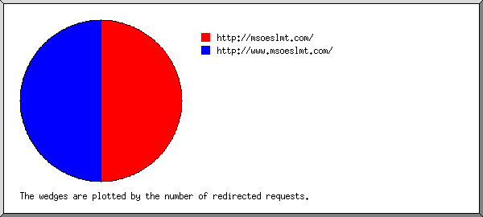
Listing referring URLs, sorted by the number of redirected requests.
| #reqs | URL |
|---|---|
| 4 | http://msoeslmt.com/ |
| 4 | http://www.msoeslmt.com/ |
(Go To: Top | General Summary | Monthly Report | Daily Summary | Hourly Summary | Domain Report | Organization Report | Redirected Referrer Report | Failed Referrer Report | Referring Site Report | Browser Report | Browser Summary | Operating System Report | Status Code Report | File Size Report | File Type Report | Directory Report | Request Report)
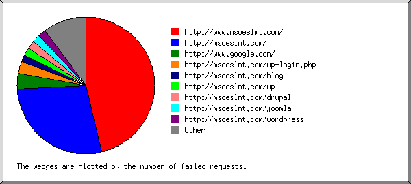
Listing referring URLs, sorted by the number of failed requests.
(Go To: Top | General Summary | Monthly Report | Daily Summary | Hourly Summary | Domain Report | Organization Report | Redirected Referrer Report | Failed Referrer Report | Referring Site Report | Browser Report | Browser Summary | Operating System Report | Status Code Report | File Size Report | File Type Report | Directory Report | Request Report)
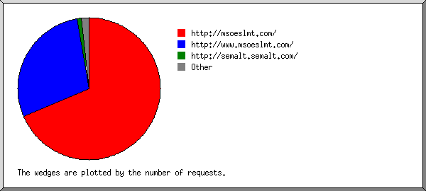
Listing referring sites, sorted by the number of requests.
| #reqs | site |
|---|---|
| 1816 | http://msoeslmt.com/ |
| 1687 | http://www.msoeslmt.com/ |
| 24 | http://whois.domaintools.com/ |
| 21 | http://semalt.semalt.com/ |
| 18 | http://buttons-for-website.com/ |
| 9 | http://www.netcraft.com/ |
| 4 | http://www.google.com/ |
| 3 | http://mawords.com/ |
| 1 | http://msns8345.com/ |
| 1 | () { :?http:/ |
(Go To: Top | General Summary | Monthly Report | Daily Summary | Hourly Summary | Domain Report | Organization Report | Redirected Referrer Report | Failed Referrer Report | Referring Site Report | Browser Report | Browser Summary | Operating System Report | Status Code Report | File Size Report | File Type Report | Directory Report | Request Report)
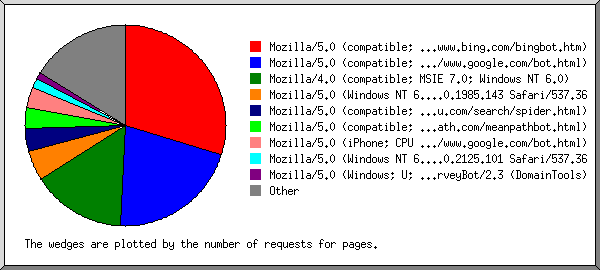
Listing the top 40 browsers by the number of requests for pages, sorted by the number of requests for pages.
| #reqs | #pages | browser |
|---|---|---|
| 617 | 540 | Mozilla/5.0 (compatible; bingbot/2.0; +http://www.bing.com/bingbot.htm) |
| 1178 | 403 | Mozilla/5.0 (compatible; Googlebot/2.1; +http://www.google.com/bot.html) |
| 231 | 231 | Mozilla/4.0 (compatible; MSIE 7.0; Windows NT 6.0) |
| 96 | 71 | Mozilla/5.0 (compatible; Baiduspider/2.0; +http://www.baidu.com/search/spider.html) |
| 71 | 71 | Mozilla/5.0 (compatible; meanpathbot/1.0; +http://www.meanpath.com/meanpathbot.html) |
| 51 | 51 | Mozilla/5.0 (iPhone; CPU iPhone OS 6_0 like Mac OS X) AppleWebKit/536.26 (KHTML, like Gecko) Version/6.0 Mobile/10A5376e Safari/8536.25 (compatible; Googlebot/2.1; +http://www.google.com/bot.html) |
| 951 | 39 | Mozilla/5.0 (Windows NT 6.1; WOW64) AppleWebKit/537.36 (KHTML, like Gecko) Chrome/36.0.1985.143 Safari/537.36 |
| 982 | 34 | Mozilla/5.0 (Windows NT 6.1; WOW64) AppleWebKit/537.36 (KHTML, like Gecko) Chrome/38.0.2125.101 Safari/537.36 |
| 23 | 23 | Mozilla/5.0 (Windows; U; Windows NT 5.1; en; rv:1.9.0.13) Gecko/2009073022 Firefox/3.5.2 (.NET CLR 3.5.30729) SurveyBot/2.3 (DomainTools) |
| 18 | 18 | Mozilla/5.0 (Windows NT 6.1; rv:6.0) Gecko/20110814 Firefox/6.0 Google favicon |
| 14 | 14 | Mozilla/5.0 (compatible; NetcraftSurveyAgent/1.0; +info@netcraft.com) |
| 12 | 12 | Mozilla/5.0 (X11; Ubuntu; Linux i686; rv:14.0; ips-agent) Gecko/20100101 Firefox/14.0.1 |
| 10 | 10 | Mozilla/4.0 (compatible; MSIE 6.0; Windows NT 5.1; SV1) |
| 9 | 9 | Mozilla/4.0 (compatible; Netcraft Web Server Survey) |
| 58 | 8 | Mozilla/4.0 (compatible; MSIE 7.0; Windows NT 5.2) |
| 121 | 8 | Mozilla/5.0 (Windows NT 6.1) AppleWebKit/537.36 (KHTML, like Gecko) Chrome/39.0.2171.95 Safari/537.36 |
| 7 | 7 | BlackBerry9000/4.6.0.167 Profile/MIDP-2.0 Configuration/CLDC-1.1 VendorID/102 ips-agent |
| 6 | 6 | Mozilla/5.0 (Windows NT 6.1; WOW64) AppleWebKit/537.36 (KHTML, like Gecko) Chrome/34.0.1847.137 Safari/537.36 |
| 6 | 6 | Mozilla/4.0 (compatible; MSIE 6.0; Windows NT) |
| 6 | 6 | Mozilla/5.0 (compatible; YandexBot/3.0; +http://yandex.com/bots) |
| 137 | 5 | Mozilla/5.0 (Windows NT 6.1; WOW64) AppleWebKit/537.36 (KHTML, like Gecko) Chrome/35.0.1916.153 Safari/537.36 |
| 5 | 5 | Mozilla/4.0 (compatible; MSIE 6.0; Windows NT 5.1; SV1; .NET CLR 1.1.4322) |
| 5 | 5 | Mozilla/5.0 (Windows NT 6.1; WOW64) AppleWebKit/534.24 (KHTML, like Gecko) Chrome/11.0.696.71 Safari/534.24 |
| 5 | 5 | Mozilla/4.0 (compatible; MSIE 5.5; Windows NT) |
| 5 | 5 | Mozilla/5.0 (compatible; DotBot/1.1; http://www.opensiteexplorer.org/dotbot, help@moz.com) |
| 5 | 5 | Mozilla/5.0 (Macintosh; Intel Mac OS X 10_9_2) AppleWebKit/537.36 (KHTML, like Gecko) Chrome/34.0.1847.131 Safari/537.36 |
| 4 | 4 | Mozilla/5.0 (X11; U; Linux x86_64; en-US) AppleWebKit/533.3 (KHTML, like Gecko) Qt/4.7.1 Safari/533.3 |
| 108 | 4 | Mozilla/5.0 (Windows NT 6.1; WOW64) AppleWebKit/537.36 (KHTML, like Gecko) Chrome/37.0.2062.124 Safari/537.36 |
| 136 | 4 | Mozilla/5.0 (Windows NT 6.1; WOW64) AppleWebKit/537.36 (KHTML, like Gecko) Chrome/32.0.1700.107 Safari/537.36 |
| 4 | 4 | Mozilla/5.0 (Windows NT 6.1; WOW64) AppleWebKit/537.4 (KHTML, like Gecko) Chrome/22.0.1229.94 Safari/537.4 |
| 4 | 4 | Mozilla/5.0 (Windows NT 6.1; rv:10.0.1) Gecko/20100101 Firefox/10.0.1 |
| 4 | 4 | Mozilla/5.0 (Windows; U; Windows NT 6.0; en-US; rv:1.9.2.3) Gecko/20100401 Firefox/3.6.3 GTB6 (.NET CLR 3.5.30729) |
| 4 | 4 | Mozilla/5.0 (compatible; AdvBot/2.0; +http://advbot.net/bot.html) |
| 119 | 4 | Mozilla/5.0 (Windows NT 6.1; WOW64) AppleWebKit/537.36 (KHTML, like Gecko) Chrome/38.0.2125.111 Safari/537.36 |
| 3 | 3 | Apache-HttpClient/4.3 (java 1.5) |
| 3 | 3 | Mozilla/4.0 (compatible; MSIE 8.0; Windows NT 6.0) |
| 95 | 3 | Mozilla/5.0 (Windows NT 6.1; WOW64) AppleWebKit/537.36 (KHTML, like Gecko) Chrome/39.0.2171.95 Safari/537.36 |
| 3 | 3 | Mozilla/5.0 (Windows NT 6.1; WOW64) AppleWebKit/537.36 (KHTML, like Gecko) Chrome/35.0.1916.114 Safari/537.36 |
| 3 | 3 | Mozilla/5.0 (Windows NT 6.1; WOW64; rv:23.0) Gecko/20100101 Firefox/23.0 |
| 3 | 3 | Mozilla/5.0 (Windows NT 5.1; rv:21.0) Gecko/20100101 Firefox/28.0 |
| 1122 | 112 | [not listed: 112 browsers] |
(Go To: Top | General Summary | Monthly Report | Daily Summary | Hourly Summary | Domain Report | Organization Report | Redirected Referrer Report | Failed Referrer Report | Referring Site Report | Browser Report | Browser Summary | Operating System Report | Status Code Report | File Size Report | File Type Report | Directory Report | Request Report)
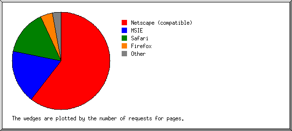
Listing the top 20 browsers by the number of requests for pages, sorted by the number of requests for pages.
| # | #reqs | #pages | browser |
|---|---|---|---|
| 1 | 2024 | 1135 | Netscape (compatible) |
| 2 | 483 | 280 | MSIE |
| 292 | 241 | MSIE/7 | |
| 25 | 25 | MSIE/6 | |
| 6 | 6 | MSIE/8 | |
| 5 | 5 | MSIE/5 | |
| 154 | 3 | MSIE/9 | |
| 3 | 3148 | 215 | Safari |
| 2941 | 145 | Safari/537 | |
| 51 | 51 | Safari/8536 | |
| 41 | 7 | Safari/534 | |
| 75 | 5 | Safari/9537 | |
| 4 | 4 | Safari/533 | |
| 34 | 1 | Safari/6533 | |
| 1 | 1 | Safari/535 | |
| 1 | 1 | Safari/536 | |
| 4 | 92 | 85 | Firefox |
| 29 | 29 | Firefox/3 | |
| 19 | 19 | Firefox/6 | |
| 13 | 13 | Firefox/14 | |
| 4 | 4 | Firefox/10 | |
| 3 | 3 | Firefox/23 | |
| 3 | 3 | Firefox/28 | |
| 2 | 2 | Firefox/31 | |
| 2 | 2 | Firefox/27 | |
| 2 | 2 | Firefox/18 | |
| 1 | 1 | Firefox/11 | |
| 5 | 7 | 7 | BlackBerry9000 |
| 7 | 7 | BlackBerry9000/4 | |
| 6 | 444 | 5 | Mozilla |
| 7 | 4 | 4 | Apache-HttpClient |
| 4 | 4 | Apache-HttpClient/4 | |
| 8 | 2 | 2 | Googlebot |
| 2 | 2 | Googlebot/2 | |
| 9 | 15 | 2 | facebookexternalhit |
| 15 | 2 | facebookexternalhit/1 | |
| 10 | 2 | 2 | AppEngine-Google; (+http: |
| 2 | 2 | AppEngine-Google; (+http://code | |
| 11 | 2 | 2 | AdnormCrawler www.adnorm.com |
| 2 | 2 | AdnormCrawler www.adnorm.com/crawler | |
| 12 | 2 | 2 | msnbot |
| 1 | 1 | msnbot/2 | |
| 1 | 1 | msnbot/1 | |
| 13 | 2 | 2 | Mechanize |
| 2 | 2 | Mechanize/2 | |
| 14 | 2 | 2 | Comodo-Webinspector-Crawler 2.2.1, http: |
| 2 | 2 | Comodo-Webinspector-Crawler 2.2.1, http://www | |
| 15 | 2 | 2 | wsr-agent |
| 2 | 2 | wsr-agent/1 | |
| 16 | 2 | 2 | Python-urllib |
| 1 | 1 | Python-urllib/1 | |
| 1 | 1 | Python-urllib/3 | |
| 17 | 1 | 1 | User-Agent: Mozilla |
| 1 | 1 | User-Agent: Mozilla/5 | |
| 18 | 1 | 1 | WhatWeb |
| 1 | 1 | WhatWeb/0 | |
| 19 | 1 | 1 | panscient.com |
| 20 | 1 | 1 | () { :;}; echo; |
| 1 | 1 | () { :;}; echo; /usr/bin/env | |
| 7 | 6 | [not listed: 6 browsers] |
(Go To: Top | General Summary | Monthly Report | Daily Summary | Hourly Summary | Domain Report | Organization Report | Redirected Referrer Report | Failed Referrer Report | Referring Site Report | Browser Report | Browser Summary | Operating System Report | Status Code Report | File Size Report | File Type Report | Directory Report | Request Report)
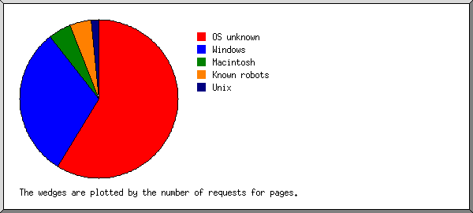
Listing operating systems, sorted by the number of requests for pages.
| # | #reqs | #pages | OS |
|---|---|---|---|
| 1 | 1969 | 1092 | OS unknown |
| 2 | 3818 | 488 | Windows |
| 3695 | 416 | Unknown Windows | |
| 52 | 51 | Windows XP | |
| 11 | 11 | Windows NT | |
| 58 | 8 | Windows Server 2003 | |
| 2 | 2 | Windows 98 | |
| 3 | 108 | 83 | Known robots |
| 4 | 187 | 73 | Macintosh |
| 5 | 162 | 23 | Unix |
| 161 | 22 | Linux | |
| 1 | 1 | Other Unix |
(Go To: Top | General Summary | Monthly Report | Daily Summary | Hourly Summary | Domain Report | Organization Report | Redirected Referrer Report | Failed Referrer Report | Referring Site Report | Browser Report | Browser Summary | Operating System Report | Status Code Report | File Size Report | File Type Report | Directory Report | Request Report)
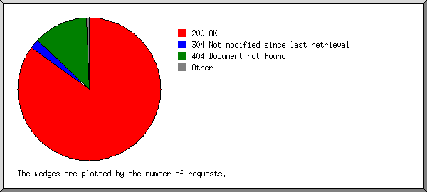
Listing status codes, sorted numerically.
| #reqs | status code |
|---|---|
| 6051 | 200 OK |
| 6 | 206 Partial content |
| 2 | 301 Document moved permanently |
| 8 | 302 Document found elsewhere |
| 202 | 304 Not modified since last retrieval |
| 1191 | 404 Document not found |
| 43 | 500 Internal server error |
(Go To: Top | General Summary | Monthly Report | Daily Summary | Hourly Summary | Domain Report | Organization Report | Redirected Referrer Report | Failed Referrer Report | Referring Site Report | Browser Report | Browser Summary | Operating System Report | Status Code Report | File Size Report | File Type Report | Directory Report | Request Report)
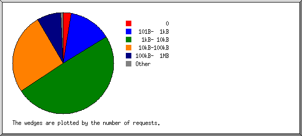
| size | #reqs | %bytes |
|---|---|---|
| 0 | 218 | |
| 1B- 10B | 22 | |
| 11B- 100B | 54 | |
| 101B- 1kB | 1065 | 0.17% |
| 1kB- 10kB | 3025 | 8.76% |
| 10kB-100kB | 1452 | 30.08% |
| 100kB- 1MB | 420 | 58.10% |
| 1MB- 10MB | 3 | 2.88% |
(Go To: Top | General Summary | Monthly Report | Daily Summary | Hourly Summary | Domain Report | Organization Report | Redirected Referrer Report | Failed Referrer Report | Referring Site Report | Browser Report | Browser Summary | Operating System Report | Status Code Report | File Size Report | File Type Report | Directory Report | Request Report)
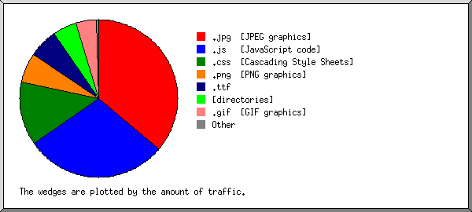
Listing extensions with at least 0.1% of the traffic, sorted by the amount of traffic.
| #reqs | %bytes | extension |
|---|---|---|
| 145 | 31.02% | .jpg [JPEG graphics] |
| 1797 | 29.03% | .js [JavaScript code] |
| 1557 | 13.62% | .css [Cascading Style Sheets] |
| 330 | 7.44% | .png [PNG graphics] |
| 200 | 7.11% | .gif [GIF graphics] |
| 1774 | 6.01% | [directories] |
| 83 | 5.27% | .ttf |
| 358 | 0.47% | .php [PHP] |
| 15 | 0.03% | [not listed: 3 extensions] |
(Go To: Top | General Summary | Monthly Report | Daily Summary | Hourly Summary | Domain Report | Organization Report | Redirected Referrer Report | Failed Referrer Report | Referring Site Report | Browser Report | Browser Summary | Operating System Report | Status Code Report | File Size Report | File Type Report | Directory Report | Request Report)
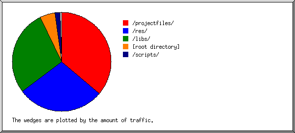
Listing directories with at least 0.01% of the traffic, sorted by the amount of traffic.
| #reqs | %bytes | directory |
|---|---|---|
| 1058 | 32.33% | /res/ |
| 141 | 30.81% | /projectfiles/ |
| 2457 | 28.48% | /libs/ |
| 1889 | 6.03% | [root directory] |
| 353 | 1.64% | /scripts/ |
| 246 | 0.46% | /views/ |
| 2 | 0.24% | /profilefiles/ |
| 113 | 0.01% | [not listed: 2 directories] |
(Go To: Top | General Summary | Monthly Report | Daily Summary | Hourly Summary | Domain Report | Organization Report | Redirected Referrer Report | Failed Referrer Report | Referring Site Report | Browser Report | Browser Summary | Operating System Report | Status Code Report | File Size Report | File Type Report | Directory Report | Request Report)
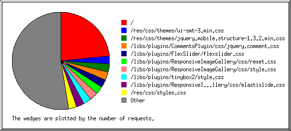
Listing files with at least 20 requests, sorted by the number of requests.
| #reqs | %bytes | last time | file |
|---|---|---|---|
| 1770 | 6.01% | Feb/28/15 10:06 AM | / |
| 42 | 0.11% | Jan/ 2/15 1:12 PM | /?100.43.85.9 |
| 36 | 0.17% | Feb/27/15 12:14 PM | /?66.249.65.144 |
| 33 | Sep/23/14 12:27 PM | /?123.125.71.44 | |
| 25 | 0.11% | Jan/ 5/15 1:11 PM | /?130.0.238.5 |
| 157 | 0.05% | Feb/28/15 5:58 AM | /libs/plugins/ResponsiveImageGallery/css/reset.css |
| 157 | 0.14% | Feb/28/15 5:39 AM | /libs/plugins/ResponsiveImageGallery/css/style.css |
| 156 | 0.39% | Feb/28/15 5:38 AM | /libs/plugins/FlexSlider/flexslider.css |
| 156 | 5.24% | Feb/28/15 5:38 AM | /res/css/themes/jquery.mobile.structure-1.3.2.min.css |
| 156 | 0.26% | Feb/28/15 5:39 AM | /libs/plugins/CommentsPlugin/css/jquery.comment.css |
| 156 | 2.46% | Feb/28/15 5:38 AM | /res/css/themes/ui-smt-3.min.css |
| 156 | 0.10% | Feb/28/15 5:38 AM | /libs/plugins/ResponsiveImageGallery/css/elastislide.css |
| 155 | 4.85% | Feb/28/15 5:39 AM | /res/css/styles.css |
| 154 | 0.11% | Feb/28/15 5:38 AM | /libs/plugins/tinybox2/style.css |
| 154 | 0.03% | Feb/28/15 5:38 AM | /libs/plugins/overlay/overlay-style.css |
| 130 | 5.68% | Feb/28/15 5:39 AM | /libs/jquery.js |
| 128 | 0.27% | Feb/28/15 5:39 AM | /libs/jquerybbq.js |
| 128 | 8.71% | Feb/28/15 5:39 AM | /libs/jquery.mobile.js |
| 126 | 0.08% | Feb/28/15 5:39 AM | /libs/plugins/overlay/itpoverlay.js |
| 126 | 0.33% | Feb/28/15 5:39 AM | /libs/plugins/tinybox2/tinybox.js |
| 125 | 6.63% | Feb/28/15 5:39 AM | /libs/plugins/wysiwig/dist/wysihtml5-0.3.0.min.js |
| 123 | 0.79% | Feb/28/15 5:39 AM | /libs/plugins/wysiwig/parser_rules/advanced.js |
| 122 | 0.09% | Feb/28/15 5:39 AM | /scripts/previewwidget.js |
| 119 | 0.02% | Feb/28/15 5:39 AM | /app.js |
| 111 | 0.10% | Feb/28/15 1:37 AM | /views/HomepageView.php |
| 111 | 0.76% | Feb/28/15 5:39 AM | /libs/plugins/CommentsPlugin/js/jquery.comment.js |
| 111 | 1.11% | Feb/28/15 5:39 AM | /libs/plugins/FlexSlider/jquery.flexslider-min.js |
| 109 | 2.17% | Feb/28/15 5:39 AM | /libs/plugins/JQueryForms/JQueryForms.js |
| 108 | 0.85% | Feb/28/15 5:39 AM | /libs/plugins/EventCalendarPlugin/js/jquery.eventCalendar.js |
| 106 | 0.97% | Feb/28/15 5:39 AM | /scripts/PageChanger.js |
| 104 | 0.56% | Feb/28/15 5:39 AM | /scripts/ForumWidget.js |
| 88 | 3.41% | Feb/28/15 1:37 AM | /res/images/logo-no_text.png |
| 88 | 0.06% | Feb/28/15 1:37 AM | /res/images/msoe-logo.png |
| 84 | 0.30% | Feb/28/15 1:37 AM | /res/css/themes/images/ajax-loader.gif |
| 83 | 5.27% | Feb/28/15 1:37 AM | /res/fonts/gothic.ttf |
| 82 | 0.08% | Feb/28/15 1:37 AM | /res/css/themes/images/icons-18-white.png |
| 77 | 0.30% | Feb/28/15 1:37 AM | /res/images/spinner.gif |
| 68 | 26.58% | Feb/28/15 1:37 AM | /projectfiles/37/Desert.jpg |
| 39 | 0.01% | Jan/19/15 3:49 PM | /views/404.php |
| 32 | Oct/20/14 1:11 PM | /controllers/FriendshipController.php | |
| 25 | 0.25% | Feb/25/15 3:33 AM | /views/ProjectView.php |
| 21 | 0.24% | Feb/25/15 3:33 AM | /views/ProjectView.php?id=37 |
| 25 | Feb/25/15 3:33 AM | /controllers/ForumPageController.php | |
| 24 | Feb/25/15 3:33 AM | /controllers/ForumPageController.php?command=get&project_id=37&offset=0 | |
| 22 | Feb/25/15 3:33 AM | /controllers/CommentsController.php | |
| 20 | Feb/25/15 3:33 AM | /controllers/CommentsController.php?message=get&id=37 | |
| 21 | 0.02% | Feb/25/15 3:33 AM | /scripts/projectnavwidget.js |
| 311 | 14.97% | Feb/25/15 3:33 AM | [not listed: 97 files] |